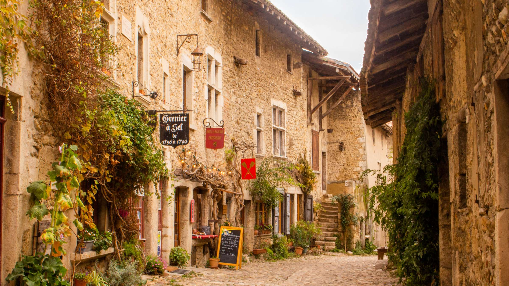
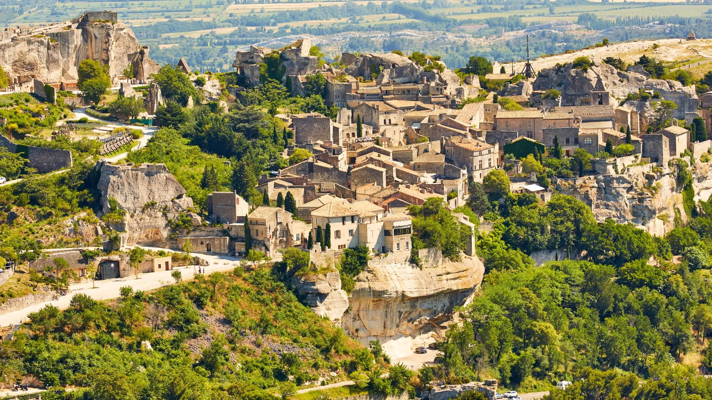
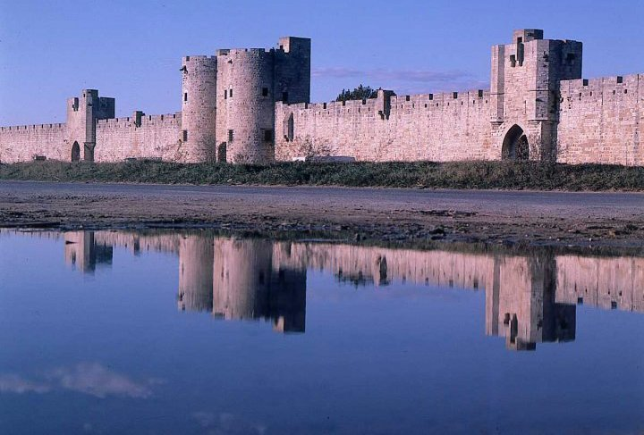
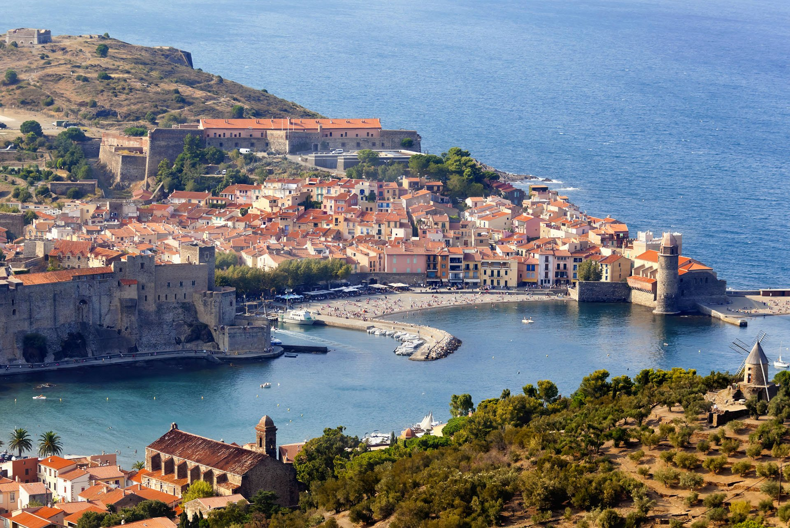
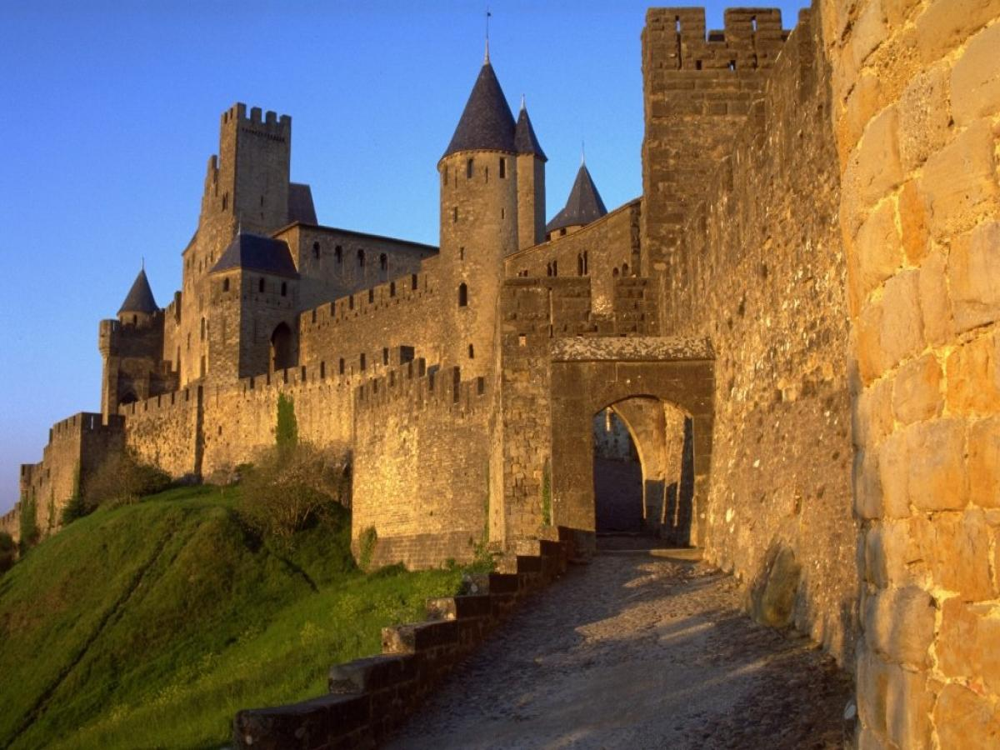
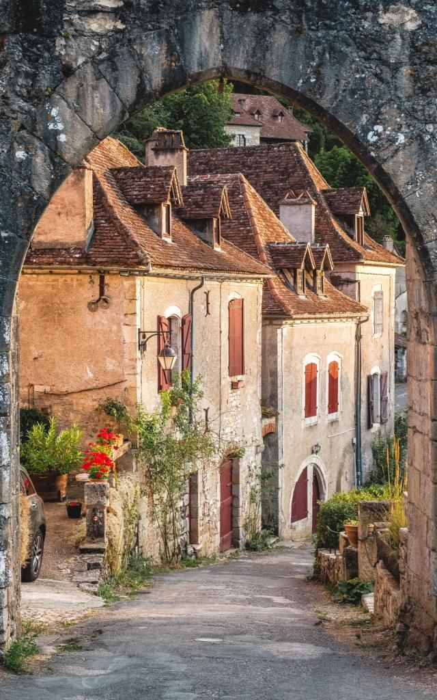
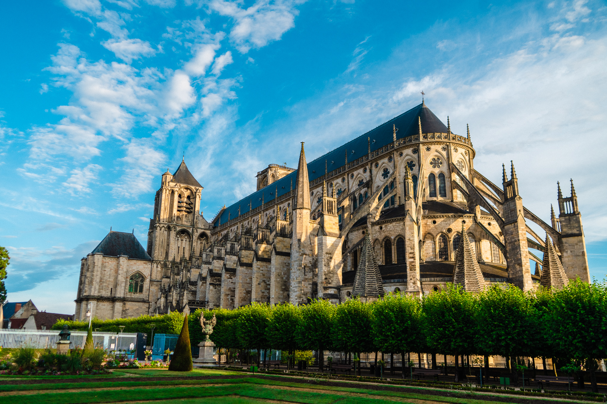
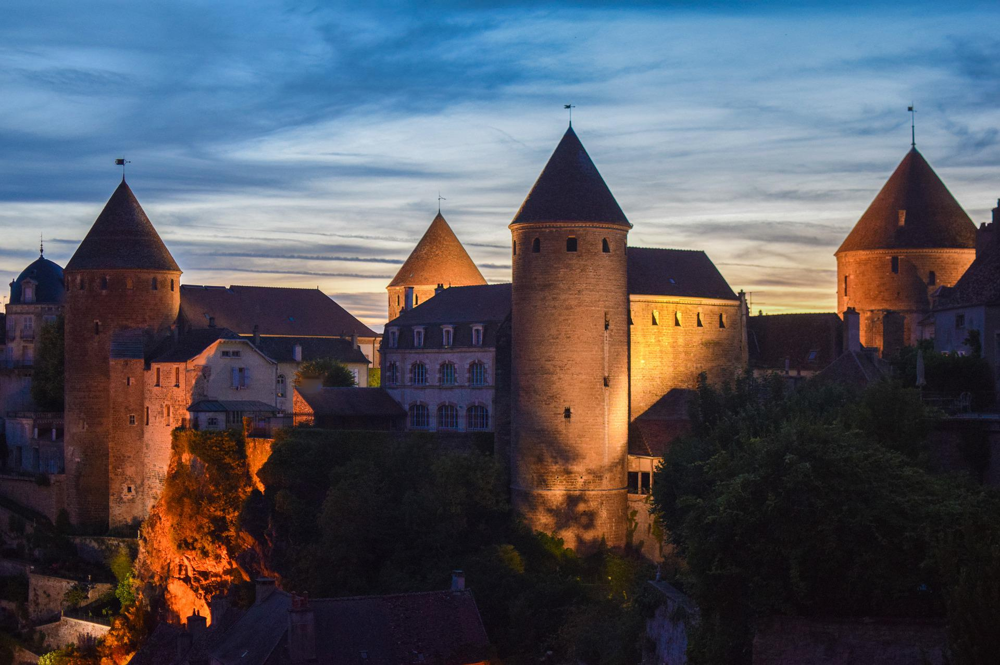

Opération : Grande Vadrouille des Chevaliers Gourmands
À : Agente Spéciale Sarah | De : Ton Père, Scribe Royal | Sujet : Notre plan d'invasion du Sud pour cet été (Mets de l'huile dans l'armure).
Jour 1 : Le Camp de Base des Mousquetaires 🏰
Route : Besançon ➡️ Pérouges (~180 km)
La Mission Visuelle
On commence par un voyage dans le temps. Pérouges, c'est un décor de film à ciel ouvert. On va se balader dans les ruelles pavées et dormir dans une auberge de l'époque.
La Quête du Graal 🥧
Ton objectif : goûter la fameuse Galette de Pérouges au sucre. Une spécialité simple, secrète et délicieuse.
Campement Confirmé (16/07 - 17/07)
Hôtel : Hostellerie du Vieux Pérouges
Adresse : Place du Tilleul, 01800 Pérouges
✅ RÉSERVATION EFFECTUÉE


Jour 2 : Le Nid d'Aigle & le Show Laser 🦅
Route : Pérouges ➡️ Les Baux-de-Provence (~300 km)
La Mission Visuelle
On grimpe sur un rocher pour explorer les ruines d'un château. Juste en dessous : les Carrières de Lumières, un show artistique immersif dans une carrière.
La Quête du Graal 🫒
Dénicher la meilleure tapenade et de l'huile d'olive de la région pour les apéros.
Campement Confirmé (17/07 - 18/07)
Hôtel : Castillon des Baux
Adresse : 10 Bis Avenue de la Vallée des Baux, 13520 Maussane-les-Alpilles
✅ RÉSERVATION EFFECTUÉE


Jour 3 : La Pause du Parrain 🎲
Route : Les Baux ➡️ Palavas-les-Flots (~90 km)
La Mission Visuelle
Repos chez le Godfather. On se prépare pour une expédition potentielle à Aigues-Mortes pour voir ses remparts et les marais salants.
La Quête du Graal 🍦
Manger la meilleure glace de Palavas et dénicher de la fleur de sel rose.
Campement en Attente (18/07 - 19/07)
Hôtel : En cours de repérage.
Lieu : Palavas-les-Flots ou environs.
🚧 MISSION DÉLÉGUÉE AU PARRAIN
Jour 4 : La Tranchée Diplomatique 🕊️
Route : Palavas ➡️ Argelès-sur-Mer (~136 km)
La Mission Visuelle
Opération tactique chez Mamie. On accomplit notre devoir familial avec bravoure et courage.
La Quête du Graal 🍬
Survivre, et se récompenser avec un énorme pot de rousquilles (les biscuits locaux).
Campement Confirmé (19/07 - 20/07)
Hôtel : Hôtel Beau Rivage
Adresse : 1 Avenue des Platanes, 66700 Argelès-sur-Mer
✅ RÉSERVATION EFFECTUÉE


Jour 5 : Le Boss Final des Forteresses 🐲
Route : Argelès ➡️ Carcassonne (~120 km)
La Mission Visuelle
La récompense ! On visite LA plus grande cité fortifiée d'Europe : Carcassonne. C'est le château de Disneyland, mais en vrai et en mille fois plus impressionnant.
La Quête du Graal 🍲
On s'attaque à la légende : le VRAI Cassoulet. Un plat de guerrier pour reprendre des forces.
Campement Confirmé (20/07 - 21/07)
Hôtel : La Villa Carcassonne
Adresse : 103 A Chemin de la Madeleine, 11000 Carcassonne
✅ RÉSERVATION EFFECTUÉE


Jour 6 : Le Joyau Caché sur sa Falaise ✨
Route : Carcassonne ➡️ Saint-Cirq-Lapopie (~180 km)
La Mission Visuelle
On découvre un des plus beaux villages de France, littéralement accroché à une falaise. C'est un village d'artistes, notre trouvaille secrète.
La Quête du Graal 🐐
Dénicher un Cabécou, le petit fromage de chèvre local, et du foie gras d'un petit producteur du Quercy.
Campement Confirmé (21/07 - 22/07)
Hôtel : Hôtel-Spa Le Saint Cirq
Adresse : Le Mas, 46330 Tour-de-Faure
✅ RÉSERVATION EFFECTUÉE


Jour 7 : La Cathédrale Noire & le Trésor du Roi 👑
Route : Saint-Cirq-Lapopie ➡️ Bourges (~350 km)
La Mission Visuelle
On découvre Bourges et son incroyable cathédrale. La nuit, un parcours de lumières bleues illumine les maisons médiévales.
La Quête du Graal 🧀
Partir à la chasse au Crottin de Chavignol et goûter aux lentilles vertes du Berry.
Campement Confirmé (22/07 - 23/07)
Hôtel : Hotel De Bourbon Grand Hotel Mercure
Adresse : 6 Boulevard de la République, 18000 Bourges
✅ RÉSERVATION EFFECTUÉE


Jour 8 : Le Cœur Fort de la Bourgogne 🦁
Route : Bourges ➡️ Semur-en-Auxois (~170 km)
La Mission Visuelle
Dernière claque médiévale avant le retour ! On explore Semur-en-Auxois, une forteresse sur son rocher de granit rose.
La Quête du Graal 🧀
Mission pour les braves : trouver et goûter le fameux Époisses, et une boîte des célèbres bonbons à l'Anis de Flavigny.
Campement Confirmé (23/07 - 24/07)
Hôtel : Logis Hostellerie D'Aussois
Adresse : Route de Saulieu, 21140 Semur-en-Auxois
✅ RÉSERVATION EFFECTUÉE